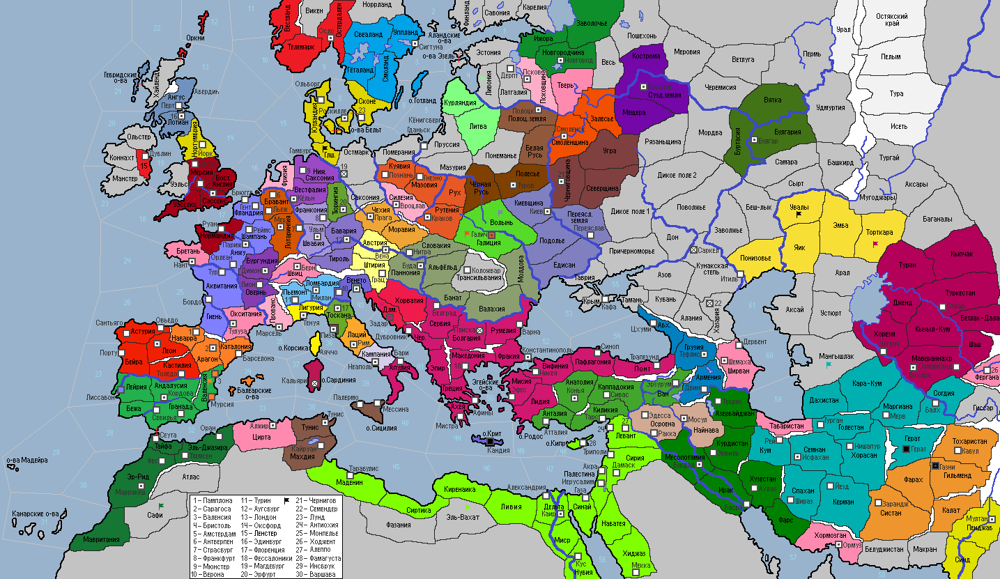

<== | 1 | | 2 | | 3 | | 4 | | 5 | | 6 | | 7 | | 8 | | 9 | | 10 | | 11 | ==>
Алавиты
Алавизм возник в IX веке. Традиционно считается, что течение основано богословом Мухаммадом ибн Нусайром. Особенностью алавитов является использование ими практику такия, позволяющую им соблюдать обряды других религий, сохраняя веру в душе. [появляется Ересь Алавитов в Курдистане, г.Эрбиль и г.Ахваз]
· Король Арагона Анцо Бесчестный передумал заключать мир с халифом Кордовы, что значительно повысило престиж монарха в глазах правителей всего христианского мира. · Сильное наводнение в Гранаде и Лейрии! · Французская армия с моря высаживается в г.Лиссабон и захватывает его. · Армия Газневидов во главе с маликом Махмудом I громит армию белуджей и освобождает Систан. Махмуд I отличается в бою, срубив одним ударом три головы пришлых захватчиков. · Герцог Лотарингии Жеро I умер, брошенный своими тремя сыновьями… Дети разругались между собой, каждый отстаивая своё право на наследование титула. · Землетрясение в Тайфе! Альморавидские войска освобождают Мавританию от восставших рабов. Местное население встречает победителей плясками и пальмовыми ветвями. · Эрих Конрадин становится новым архиепископом Вестфалии, сменяя правившую до этого династию. Вестфальская армия топит в крови восстание знати в столице, развесив трупы мятежников вдоль дороги от Кёльна до Мюнстера. · Король Швеции Рериг I потерялся на охоте. 5 лет его безуспешно искали, поэтому отложили на потом вопрос с престолонаследием… · Сельджуки захватывают земли Мангышлака. · Добрыня Василькович – новый смоленский князь. · Польша объявляет войну Галицкому княжеству. Армия вторгается в Галицию и штурмом берёт г.Галич. · Папа Иоанн V принимает буллу «Дарованное нам Богом» с целью оказания еще большей поддержки Церковью Кастилии, ведущей Реконкисту в Испании. За ведение переговоров с богопротивными сарацинами Папа отлучает от церкви Арагон. · Новгородская республика разрывает торговый договор с Венецией. · Хорватский бан Субан I развязывает войну против соседней Австрии. Вторгшиеся в Штирию войска хорватов были разбиты объединенной армией Австрии и союзной Баварии. · Аццоне Дзиани был выбран новым дожем Генуи. · Фатимидский султан Альбассин I вводит догмат джизьи на землях суннитов. Флот арабов разоряет берега Каталонии. · Швиц накрыла эпидемия оспы… · Караханидское ханство, встревоженное кочевьем близ её территории половецких орд, отвергает предложенный пакт о ненападении и объявляет им войну. Войска враждующих сторон сошлись в Торткаре, где верх взяли караханиды. Преследуя отступающего врага, караханиды поспешили в провинцию Эмба, где половцы смогли дать им отпор. · Танкмар I Сквернослов, граф саксонский, избирается курфюрстами новым императором СРИ. На церемонии коронации Танкмар I приказывает сжечь женщину, которую он объявил «грёбаной славянской ведьмой». · Туровское и Киевское княжества заключают оборонительный союз. · Византия заключает военный союз с Венгрией для целей совместного нападения на Хорватию. Совместно с новым союзником и вассальной Венецией Византийская империя объявляет войну неугомонному соседу. Втягивание Венеции в войну против единоверцев вызвало подъём недовольства в стране и повод грекам Кандии поднять вооруженное восстание и захватить город. · Византийские войска одерживают верх над армией Субана I в Далмации и загоняют бана в г.Задар, в котором он и принял смерть мужественно защищая город. · Крым оказывается окончательно утрачен империей, растерзанный варварским нашествием. · Датские разбойники грабят побережье Гранады и Бежа. · На киевском престоле утвердился единственный сын Святослава II – Ярослав, по давности прихода к власти, прозванный «Старым». Ярослав провёл аннексию захваченных у печенегов земель, но счёл нужным передать Молдову под контроль венгерского короля. Расширить свои владения киевский князь решил за счёт другого соседа – ослабевшего под ударом Польши Галицкого княжества. Киев занял провинцию Волынь без боя. · Во Флоренции возводится Палаццо Веккьо – первый замок средневековой Европы. · Герцог Богемии Вратислав I, умирая, завещает трон сыну Владиславу. · Венгерские силы короля Золты III освобождают Альфёльд, разбивая трансильванских захватчиков.